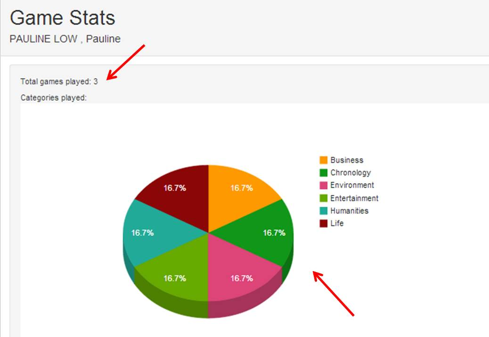

EECS 493 Winter'14
Mark Mevorah, Vertika Srivastava, Roy Chou, Pauline Low
An educational online trivia game that uses Wikipedia as the source for questions.
1. Users get to keep track of their most played categories and also, the total number of games played.
2. At the end of each game, users have the advantage to look at the Wikipedia links for the questions answered incorrectly.
1. Log in as a registered user.
2. Click on the Play tab to choose six categories that you want your questions to be on.
3. Click Start Game! and experience 4 minutes of intense concentration to clear the game board.
4. Green indicates a correct answer and red indicates an incorrect answer.
5. After 5 minutes have passed or you clicked Give up.. man, view your results on the Results page and find Wikipedia links related to the questions you answered incorrectly.
Login

Choose Categories

Game Page

Results Page

Game Statistics
